0~3부에서 PC-88의 구조, Z80 code, 플로피와 D88, MAIN/SUB CPU를 배웠습니다. 이제 그 지식을 실제 실행 중인 게임에 대입합니다.
현상 발견→정지→PC / Register→Code / Memory→한 단계 실행→원인 좁히기
4부의 범위: 특정 게임의 데이터를 끝까지 역추적하는 단계가 아니라, 먼저 debugger라는 관찰 도구를 제대로 사용하는 법에 집중합니다.
화면 결과에서 실행 원인으로
1. 게임을 보는 것과 게임이 왜 그렇게 움직였는지 분석하는 것은 다르다
플레이어가 보는 것
HP 10 → 공격받음 → HP 09
결과가 보이면 충분합니다.
분석할 때 묻는 것
10은 어디에 있었나? 어느 instruction이 읽었나? 누가 1을 감소시켰나? 09를 어디에 썼나? 그 순간 PC와 register는 무엇이었나?
핵심: 화면은 최종 결과를 보여 줍니다. 분석은 그 결과를 만든 실행 과정을 찾는 일입니다.
프로그램을 멈춰서 본다
2. Debugger는 실행 중인 프로그램을 원하는 순간에 멈추고 내부 상태를 관찰하는 도구다
CPU는 계속 instruction을 실행하므로 정상 속도에서는 PC와 register 값이 빠르게 바뀝니다. Debugger는 필요한 순간에 정지시켜 그 시점의 CPU 상태를 조사하게 합니다.
LD PC=8000h
INC PC=8003h
CALL PC=8004h
WRITE STOP
JR 실행 전
특정 사건에서 자동으로 멈추는 기능은 Breakpoint, instruction을 하나씩 실행하는 기능은 Single-step이라고 합니다. 문자 명령으로 상태를 조사하는 환경을 Monitor라고 부르기도 합니다.
정적 분석과 동적 분석
3. Code를 읽을 수 있어도 실제로 그렇게 실행됐는지는 별도로 확인해야 한다
LD A,(9000h)
DEC A
LD (9000h),A
정적으로 보면 9000h의 값을 읽고 1을 줄여 다시 쓴다는 것은 알 수 있습니다. 그러나 언제 실행됐는지, 당시 값이 무엇이었는지는 실행 중에 멈춰야 확인할 수 있습니다.
정적으로 Code 보기
Debugger로 실행 추적
존재하는 code와 가능한 경로
실제로 실행된 code와 선택된 경로
register 이름
그 순간의 실제 register 값
memory 참조 여부
그 순간 memory의 실제 byte
실기와 Emulator
4. 왜 실제 PC-88 대신 Emulator Debugger를 사용하는가
실제 PC-88에도 machine-language monitor 같은 조사 수단이 있었습니다. 하지만 breakpoint, memory access 감시, register 관찰, single-step 등을 같은 상태에서 반복하려면 emulator debugger가 훨씬 편리합니다.
분석 대상 PC-88 프로그램→Emulator로 동작 재현→Debugger로 상태 관찰
Emulator를 쓰는 이유는 다른 기계를 분석하기 위해서가 아니라 PC-88의 동작을 사람이 관찰하기 쉽게 만들기 위해서입니다.
도구보다 질문이 먼저다
5. Emulator가 달라도 분석 목적은 같다
PC-88 emulator마다 debugger의 화면 구성과 명령 이름은 다를 수 있습니다. 하지만 분석할 때 던지는 질문과 필요한 기능은 크게 달라지지 않습니다.
알고 싶은 것
일반적인 Debugger 기능
특정 code가 실행되는 순간은 언제인가?
Execution / PC Breakpoint
이 data를 어느 code가 읽는가?
Read Breakpoint / Watchpoint
이 값을 어느 code가 바꾸는가?
Write Breakpoint / Watchpoint
지금 CPU는 어디에서 무엇을 실행하는가?
PC / Register / Disassembly
이 주소에 실제로 어떤 byte가 있는가?
Memory View / Dump
instruction 하나가 무엇을 바꾸는가?
Single-step
강좌의 기준: 명령 이름을 먼저 외우지 않습니다. 무엇을 알고 싶은가 → 어떤 기능이 필요한가 → 결과에서 무엇을 읽을 것인가 순서로 생각합니다.
공통 원리를 실제 화면에서 확인한다
6. 이 강좌에서는 실제 조작 예제로 QUASI88을 사용한다
이후의 화면과 명령 입력 예시는 QUASI88 0.7.4 Monitor를 사용합니다. 배우는 대상은 QUASI88 자체가 아니라 앞 절에서 정리한 공통 debugger 기능이며, QUASI88은 그 기능을 실제 PC-88 게임에서 확인하기 위한 예제입니다.
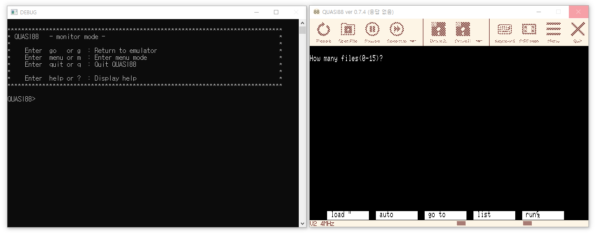
오른쪽은 PC-88 게임이 실행되는 본체 화면, 왼쪽은 실행 상태를 조사하는 Monitor입니다. 이후에는 같은 화면을 보며 PC·register·code·memory와 breakpoint 동작을 확인합니다.
공통 기능
QUASI88에서 사용하는 예
계속 실행
g
CPU 상태 확인
Breakpoint 정지 시 자동 표시 / reg
Code 확인
disasm
Memory 확인
dump
관심 사건에서 정지
break ...
한 단계 실행
trace, step
중요: 다른 emulator에서는 명령 이름과 조작법이 달라질 수 있습니다. 이후 예제를 볼 때도 먼저 “이 명령이 어떤 분석 기능을 구현하는가”를 봅니다.
실제 화면 읽기
7. Debugger를 열었을 때 먼저 해야 할 일은 어디에 무엇이 보이는지 파악하는 것이다
GUI debugger든 Monitor 방식이든 찾아야 할 정보는 같습니다. 현재 CPU/PC, register, disassembly, memory, 명령 입력 영역입니다.
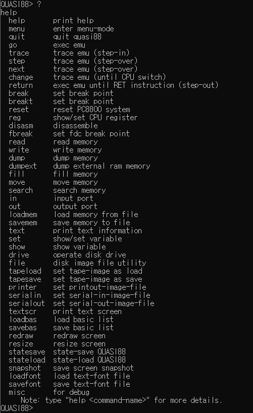
? 도움말에서 go, trace, step, break, reg, disasm, dump 등을 확인할 수 있습니다.
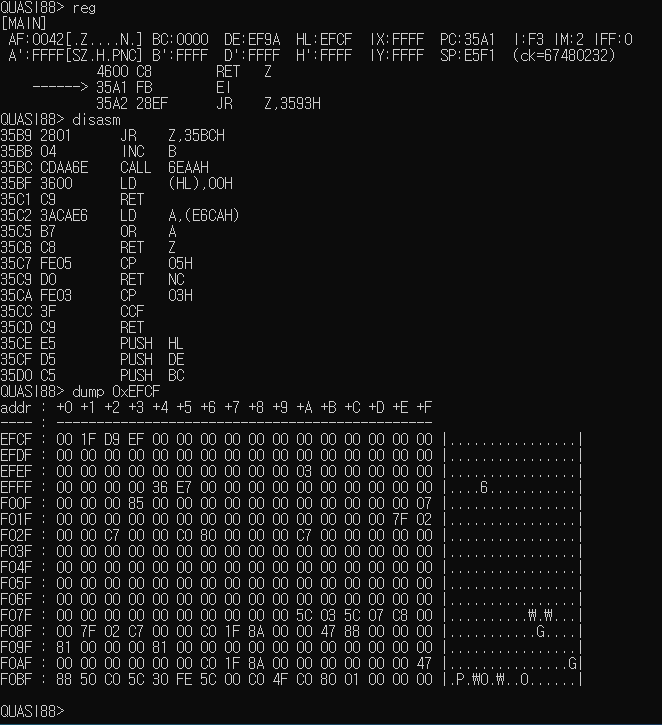
reg, disasm, dump를 이용해 CPU 상태·code·memory를 각각 확인한 실제 Monitor 화면입니다.
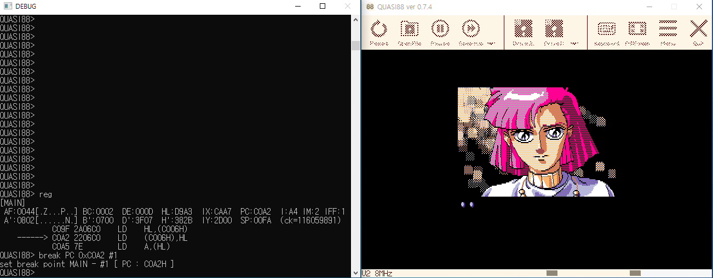
게임이 실행되는 본체 창과 CPU 상태를 조사하는 DEBUG console이 함께 동작합니다.
관찰 가능한 순간
8. 실행 중에는 상태가 계속 바뀌고, 멈춘 뒤에야 한 순간을 조사할 수 있다
g로 실행을 계속하면 게임이 움직입니다. Breakpoint가 발생하면 Monitor로 돌아오며 해당 CPU의 register 상태와 PC 주변 instruction이 자동으로 표시됩니다.
중요: Breakpoint에 걸린 직후에는 기본 CPU 상태가 이미 출력되므로 항상 reg부터 다시 입력할 필요는 없습니다.
정지 직후 첫 단서
9. 멈췄다면 가장 먼저 PC를 확인한다
PC(Program Counter)는 CPU가 지금 어느 address의 instruction을 실행하려는지 알려 줍니다.
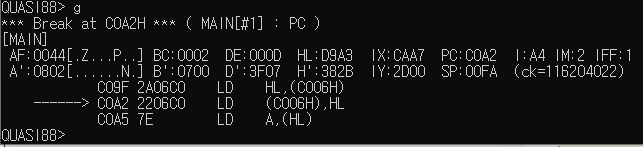
C0A2h PC breakpoint가 실제로 걸린 직후입니다. [MAIN], PC:C0A2, register와 현재 instruction 주변이 자동 표시됩니다.
12. Register가 memory 주소로 사용된다면 그 주소의 실제 byte를 확인한다
HL이 D9A3h를 가리키고 주변 code에 LD A,(HL)가 있다면 D9A3h 주변 memory를 확인합니다.
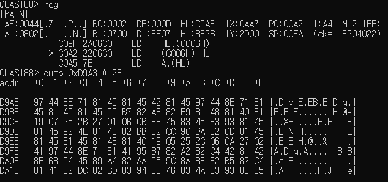
HL=D9A3h를 확인한 뒤 dump 0xD9A3 #128로 같은 주소의 실제 byte를 확인한 화면입니다.
CPU address와 D88 파일 offset은 서로 다른 좌표입니다. Debugger에서 보이는 RAM address를 그대로 D88 offset으로 생각하면 안 됩니다.
관찰할 사건을 고른다
13. Breakpoint는 주소를 외우는 기능이 아니라 관심 있는 사건을 잡는 기능이다
먼저 어떤 일이 일어나는 순간을 보고 싶은지 정합니다. 그 질문에 따라 필요한 breakpoint의 종류가 달라집니다.
질문
필요한 기능
이 routine 또는 instruction이 언제 실행되는가?
Execution / PC Breakpoint
이 data를 어느 code가 읽는가?
Read Breakpoint / Watchpoint
이 값을 어느 code가 바꾸는가?
Write Breakpoint / Watchpoint
Lab — 질문에 맞는 Breakpoint 고르기
질문을 읽고 먼저 잡아야 할 사건을 고릅니다.
핵심: “어디에 breakpoint를 걸까?”보다 먼저 “무슨 사건이 일어나는 순간을 보고 싶은가?”를 묻습니다.
실행 시점을 잡는다
14. 특정 Code가 실행되는 순간을 보고 싶다면 실행 위치를 잡는다
routine이 실제로 호출되는지, 특정 instruction까지 CPU가 도달하는지를 알고 싶다면 그 주소가 실행 위치가 되는 순간에 멈춥니다. 많은 debugger에서 Execution Breakpoint 또는 PC Breakpoint라고 부르는 기능입니다.
QUASI88 예제
break CLEARALL #0
break pc 0xC0A2 #1
g
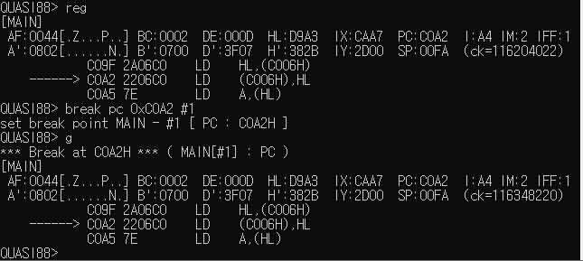
C0A2h를 실행 위치로 지정한 뒤 게임을 계속 실행하자 PC=C0A2에서 멈췄습니다. 이제 이 시점의 register와 주변 code를 조사할 수 있습니다.
이 기능이 답하는 질문: “이 code가 실제로 실행되는가?”, “언제 이 위치에 도달하는가?”
누가 읽는가
15. 이 Data를 어느 Code가 사용하는지 알고 싶다면 읽기 사건을 잡는다
값이 저장된 memory 주소를 알고 있을 때, 그 값을 어느 code가 읽어 가는지 찾고 싶다면 Read Breakpoint 또는 Read Watchpoint를 사용합니다.
QUASI88 예제
break CLEARALL #0
break read 0xD9A5 #1
g
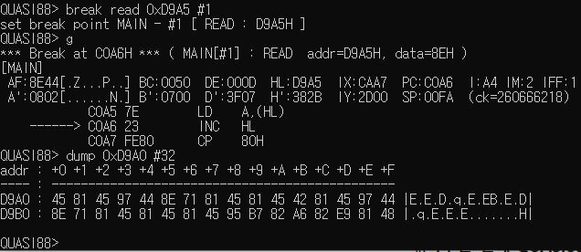
Break 메시지의 READ addr=D9A5H, data=8EH에서 실제로 읽힌 주소와 값을 확인할 수 있습니다. 정지 뒤 PC는 C0A6을 가리키지만 바로 앞 C0A5 LD A,(HL)가 D9A5h를 읽었습니다.
현재 PC만 보고 판단하지 마십시오. memory access breakpoint는 접근이 일어난 뒤 debugger로 돌아오는 구현이 많아 현재 PC가 다음 instruction을 가리킬 수 있습니다. Break 메시지의 access 주소와 주변 disassembly를 함께 봅니다.
QUASI88에서의 추가 주의: READ breakpoint는 instruction fetch와도 연결될 수 있습니다. code가 놓인 주소를 READ로 감시할 때는 data read인지 instruction fetch인지 주변 code와 함께 구분합니다.
누가 바꾸는가
16. 이 값이 왜 바뀌었는지 알고 싶다면 쓰기 사건을 잡는다
memory의 값이 예상과 다르게 변했다면 그 주소에 값을 쓴 code를 찾는 것이 가장 직접적입니다. 이때 Write Breakpoint 또는 Write Watchpoint를 사용합니다.
QUASI88 예제
break CLEARALL #0
break write 0xC0A2 #1
g
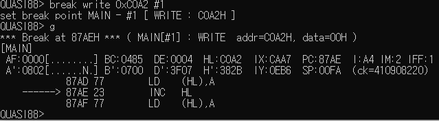
C0A2h에 write가 발생했을 때 멈춘 화면입니다. HL=C0A2h, A=00h이고 바로 앞 87AD LD (HL),A가 실제로 값을 쓴 instruction입니다. 정지 후 PC는 다음 87AE INC HL을 가리킵니다.
READ와 WRITE의 차이:사용하는 code를 찾고 싶으면 READ, 바꾼 code를 찾고 싶으면 WRITE입니다.
한 Instruction의 효과
17. 멈춘 뒤에는 한 instruction을 실행하고 무엇이 바뀌었는지 비교한다
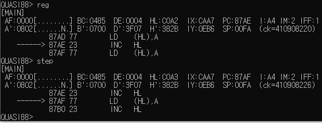
87AE INC HL 앞에서 한 단계 실행했습니다. PC는 87AEh→87AFh, HL은 C0A2h→C0A3h로 바뀝니다.
실행 전
PC = 87AEh
HL = C0A2h
INC HL
실행 후
PC = 87AFh
HL = C0A3h
Single-step은 화면이 움직였는지를 보는 기능이 아니라 instruction 하나가 CPU 상태를 어떻게 바꿨는지 확인하는 기능입니다.
호출을 어떻게 볼 것인가
18. Step Into · Step Over · Step Out은 조사 목적이 다르다
세 기능은 명령 이름보다 호출된 routine을 지금 얼마나 자세히 볼 것인가를 기준으로 구분합니다.
개념
언제 쓰는가
Step Into
CALL 내부 routine 자체가 원인인지 조사하고 싶다.
Step Over
CALL 내부는 지금 중요하지 않고, 호출이 끝난 뒤 caller의 다음 code부터 보고 싶다.
QUASI88 0.7.4에서는:trace가 Step Into에 해당하고, step은 CALL/RST에서 Step Over 동작을 합니다. return은 Step Out 용도로 제공되지만 experimental 기능으로 표시되어 있어 이번 강좌의 핵심 실습에는 사용하지 않습니다.
참고: QUASI88에는 CALL/RST 외에 DJNZ·반복 block instruction·HALT 등도 더 넓게 건너뛰는 next가 있지만 4부에서는 별도 실습하지 않습니다.
Caller와 Callee를 구분한다
19. CALL과 RET를 따라가면 호출과 복귀 관계를 실제 실행으로 확인할 수 있다
CALL은 다른 routine으로 실행 위치를 옮기고, RET는 caller의 다음 instruction으로 돌아옵니다. 내부 routine이 중요한지에 따라 Step Into와 Step Over를 선택합니다.
Caller
C13D CALL C232H
│
├─ Step Into → C232H 내부를 직접 조사
│
└─ Step Over → C232H 내부 실행
...
C256 RET
↓
Caller
C140 DEC BC ← 호출이 끝난 뒤 다시 관찰
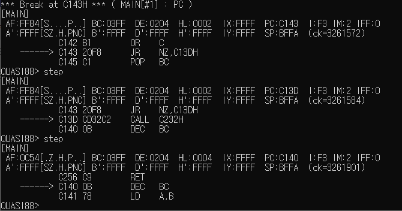
실제 예에서는 먼저 조건분기를 따라 C13Dh에 도달한 뒤, C13D CALL C232H에서 호출 내부를 건너뛰어 caller의 다음 주소 C140h에서 다시 관찰했습니다.
판단 기준: 호출 내부가 원인 후보라면 Step Into, 이미 역할을 알고 있거나 지금 관심 밖이라면 Step Over를 사용합니다.
가능한 경로보다 실제 경로
20. 조건분기와 Loop에서는 이번 실행에서 실제 선택된 경로를 확인한다
Disassembly만 보면 조건분기의 여러 경로가 보입니다. 동적 분석에서는 현재 flag와 register 값을 이용해 이번 실행에서 어느 경로가 실제로 선택됐는지 확인합니다.
정적으로 볼 때
JR NZ,C13D
; 분기할 수도 있고
; 다음으로 갈 수도 있음
실행 중에 볼 때
Z = 0
JR NZ,C13D
→ NZ 조건 성립
→ PC = C13D
앞의 실제 실행에서도 첫 한 단계 실행은 C143 JR NZ,C13D의 조건을 따라 C13Dh로 이동했고, 그 다음에 CALL을 관찰했습니다.
핵심: 가능한 경로를 머릿속으로만 추측하지 말고 현재 flag·counter·pointer 값을 보고 이번 실행에서 실제로 간 경로를 기록합니다.
Memory 밖의 사건
21. PC-88에서는 I/O Port 접근도 중요한 사건이 될 수 있다
Z80의 IN, OUT은 memory가 아니라 I/O port와 데이터를 주고받습니다. 키 입력, sound, disk subsystem 등 hardware와 연결된 처리를 조사할 때 I/O instruction이 단서가 됩니다.
처음부터 모든 I/O port를 추적할 필요는 없습니다. memory와 code 흐름을 먼저 잡고, hardware 접근이 원인으로 의심될 때 I/O까지 확장하는 것이 좋습니다.
PC-88의 두 CPU 환경
22. 지금 보고 있는 Code가 MAIN CPU인지 SUB CPU인지 확인해야 할 때가 있다
PC-88의 대표적인 FDD 구성에서는 MAIN CPU와 disk 처리를 담당하는 SUB CPU가 따로 동작합니다. 따라서 같은 숫자의 PC address가 보여도 어느 CPU의 address space를 보고 있는지 먼저 구분해야 합니다.
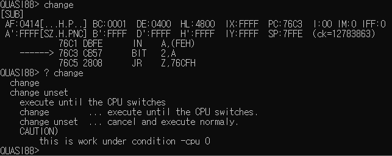
[SUB]와 PC:76C3가 현재 관찰 대상이 SUB CPU임을 보여 줍니다. 이 화면의 목적은 특정 port의 의미를 분석하는 것이 아니라 현재 어느 CPU를 보고 있는지 구분하는 법을 확인하는 것입니다.
QUASI88 예제: CPU 전환 시점을 관찰할 때 change를 사용할 수 있으며, 이 명령은 -cpu 0 설정에서 동작합니다. 다른 emulator에서는 CPU 선택·전환 방식이 다를 수 있습니다.
정지 후 반복할 관찰 순서
23. 처음 멈췄을 때는 같은 순서로 보면 중요한 단서를 놓치기 어렵다
1. 어느 CPU인지 확인한다. MAIN/SUB처럼 실행 주체가 둘 이상이면 먼저 대상을 확정합니다.
2. PC를 확인한다. CPU가 지금 어느 code 위치에 멈췄는지 찾습니다.
3. 현재와 주변 disassembly를 본다. 어디에서 왔고, 지금 무엇을 하며, 다음 어디로 갈 수 있는지 봅니다.
4. 중요한 register를 code와 연결한다. 단순 값인지, counter인지, memory를 가리키는 pointer인지 판단합니다.
5. 필요한 memory를 확인한다. pointer가 가리키는 실제 byte와 주변 data를 봅니다.
6. 조건분기라면 flag와 조건값을 본다. 이번 실행에서 실제 선택될 경로를 판단합니다.
7. 필요한 경우 한 instruction만 실행한다. 전후 PC·register·memory 상태의 변화를 비교합니다.
8. 다음 질문에 맞는 breakpoint를 고른다. 실행 위치·READ·WRITE 중 다음 단서를 가장 직접적으로 줄 기능을 선택합니다.
Debugger는 처음부터 끝까지 전부 step하는 도구가 아닙니다. 관심 없는 구간은 실행하고, 중요한 사건을 breakpoint로 잡은 뒤 필요한 몇 instruction만 자세히 봅니다.
종합 Lab
24. 명령 이름이 아니라 무엇을 알고 싶은지에서 출발한다
앞의 여러 실습에서 배운 관찰 방법을 하나의 분석 절차로 묶어 봅니다. 아래 Lab은 특정 emulator 명령을 맞히는 문제가 아니라 상황에 맞는 관찰 방법을 고르는 연습입니다.
Lab — 현상에서 다음 조사 방법 결정하기
종합 Lab의 목표: “이 emulator에서 무슨 명령을 입력하지?”가 아니라, 지금 가진 단서에서 다음으로 어떤 사건과 상태를 관찰해야 하는가를 판단할 수 있어야 합니다.
4부 핵심 정리
도구 이름보다 분석 질문과 관찰 순서를 기억한다
현상 발견→질문 만들기→사건에서 정지→CPU / PC / Register→Code / Memory→필요한 만큼만 Step
실행 시점
특정 routine이 언제 실행되는지 알고 싶으면 실행 위치를 잡습니다.
Data 사용
누가 읽는지는 READ, 누가 바꾸는지는 WRITE를 잡습니다.
실제 경로
CALL·RET·조건분기는 가능한 경로보다 현재 실행에서 실제 선택된 경로를 확인합니다.
4부에서 얻어야 할 능력: 처음 보는 emulator에서도 기능 이름을 대응시킨 뒤 같은 분석 질문과 관찰 순서를 적용할 수 있는 것.
확인 문제
4부 확인 문제
1. Debugger가 필요한 가장 기본적인 이유는?
실행 중인 프로그램을 필요한 순간에 멈추고 PC, register, memory, code 상태를 관찰해 실제 실행 과정을 확인하기 위해서입니다.
2. Disassembly와 동적 실행 추적의 차이는?
Disassembly는 존재하는 code와 가능한 흐름을 보여 주고, debugger는 이번 실행에서 실제로 선택된 code와 실제 값을 확인하게 합니다.
3. 특정 routine이 실제로 실행되는 순간을 알고 싶다면?
Execution / PC Breakpoint처럼 CPU가 해당 실행 위치에 도달했을 때 멈추는 기능을 사용합니다.
4. 어떤 RAM data를 어느 code가 읽는지 알고 싶다면?
Read Breakpoint 또는 Read Watchpoint를 사용합니다.
5. 어떤 RAM 값이 왜 바뀌었는지 알고 싶다면?
Write Breakpoint 또는 Write Watchpoint를 사용해 실제 writer를 찾습니다.
6. Memory access breakpoint에 걸렸는데 현재 PC가 접근 instruction 다음을 가리킨다면?
현재 PC만 보지 말고 Break 메시지의 access 주소와 바로 앞을 포함한 주변 disassembly를 함께 확인합니다.
7. Register를 볼 때 값 자체보다 함께 판단해야 할 것은?
그 register가 현재 code에서 일반 값, counter, 주소, pointer 가운데 어떤 역할로 쓰이는지 판단해야 합니다.
8. Step Into와 Step Over의 차이는?
Step Into는 CALL 내부 routine까지 들어가 조사하고, Step Over는 호출 내부를 실행한 뒤 caller의 다음 위치부터 다시 관찰합니다.
9. 조건분기에서 실제 경로를 판단하려면?
분기 instruction과 그 조건에 사용되는 flag 또는 counter 값을 함께 봅니다.
10. PC address와 D88 file offset은 같은 좌표인가?
아닙니다. PC는 CPU address space의 실행 위치이고 D88 offset은 disk image 파일 안의 byte 위치입니다.
11. MAIN CPU만 보면 항상 충분한가?
아닙니다. disk subsystem처럼 SUB CPU가 관여하는 대상은 현재 어느 CPU를 관찰하고 있는지 구분해야 합니다.
12. 처음부터 끝까지 모든 instruction을 single-step 하는 것이 좋은 방법인가?
아닙니다. 관심 없는 구간은 실행하고, 중요한 사건을 breakpoint로 잡은 뒤 필요한 몇 instruction만 자세히 비교하는 편이 효율적입니다.
다음 5부로
이제 Debugger를 실제 게임 Data와 Code의 흐름에 적용한다
4부 어떻게 멈추고 무엇을 볼 것인가→5부 Data가 어디서 와서 어떤 Code를 지나 어디로 가는가
4부에서는 필요한 순간을 잡고 CPU·PC·register·code·memory를 읽는 법을 배웠습니다. 5부에서는 이 방법을 실제 게임 분석에 사용하여 특정 값이 어디에서 읽히고 어떤 routine을 거쳐 어디에 쓰이는지를 추적합니다.